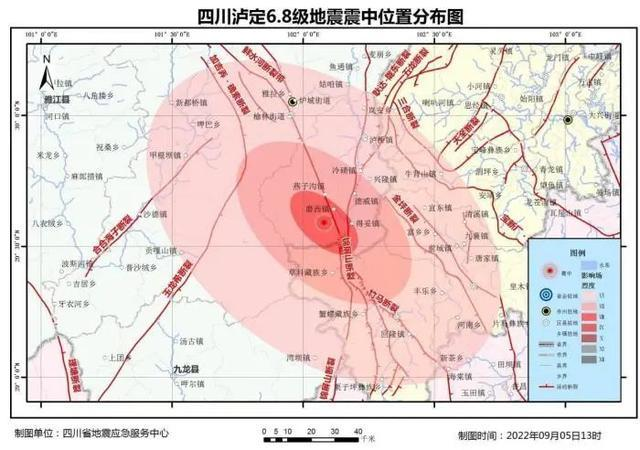
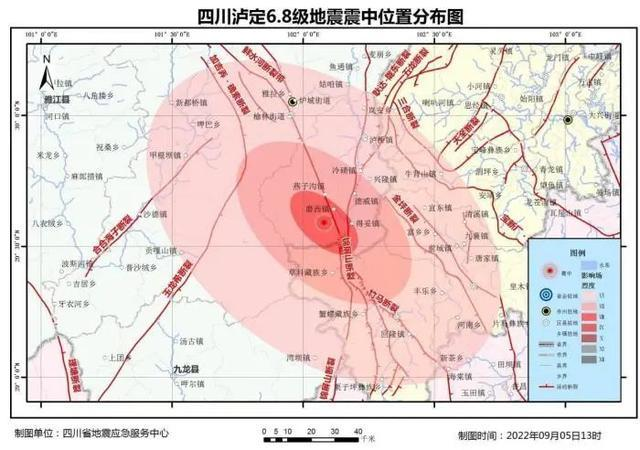
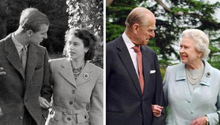
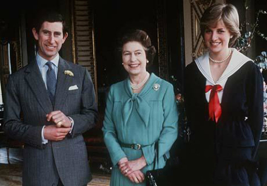
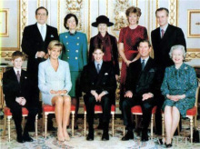

9月5日-泸定6.8级地震
2022年9月5日12时52分，四川省甘孜州泸定县发生6.8级地震，震源深度16千米。震中位于北纬29.59度，东经102.08度。此次地震初步震源机制解显示为走滑型破裂。
地震发生后，四川省地震局立即启动二级地震应急响应，成立应急指挥部，召开紧急会议，就应急处置工作做出安排部署，同时，指派当地防震减灾工作部门及地震监测中心站前往震区调查核实震情、灾情，协同当地政府抗震救灾。 [9] 四川省抗震救灾指挥部已将二级地震应急响应提升至一级。9月11日，应急管理部正式发布泸定6.8级地震烈度图。从9月12日18时起，四川省终止地震一级应急响应。
截至2022年9月11日17时，地震已经造成93人遇难，其中甘孜州遇难55人，雅安市遇难38人。另有25人失联，其中泸定县9人，石棉县16人。
2022年11月6日起，五集系列节目《生命线—四川泸定6.8级地震救援纪实》在央视社会与法频道播出。
基本信息
| 中文名 | 9·5泸定地震 | 地震等级 | 6.8级 |
| 发生时间 | 2022年9月5日 | 伤亡情况 | 93人遇难 |
| 发生地点 | 四川省甘孜州泸定县 | 地震最高烈度 | Ⅸ度（9度) |
事件经过
当地时间2022年10月8日清晨，在横跨刻赤海峡的克里米亚大桥铁路上，一节装有燃料的火车油罐车厢起火，多节货运车厢受损，部分道路被毁。大桥上的铁路和公路交通暂时中断，刻赤海峡航运正常。
2022年10月8日，据俄新社稍早前报道，俄罗斯国家反恐委员会发布消息称，克里米亚大桥当地时间8日早上发生的事故系一辆卡车发生爆炸，引起向克里米亚半岛方向行驶的7个油罐车起火。
当地时间2022年10月8日，塔斯社援引俄罗斯紧急情况部的消息报道称，克里米亚大桥铁路桥上载有柴油的着火油罐车厢已被灭火
震中简介
泸定县隶属于四川省甘孜藏族自治州，地处青藏高原向四川盆地过渡地带，是进藏出川的必经之地，被誉为甘孜州“东大门”。泸定属典型的高山峡谷区，境内有贡嘎山、海螺沟冰川森林公园等著名景点，是川西重要的旅游景区之一。1935年红军在这里取得了飞夺泸定桥的伟大胜利。该县面积2165平方公里，下辖4镇8乡，2014年人口约9万，2014年GDP达19亿元。
震中地形
震中5公里范围内平均海拔约2722米。
地震原因
地震专家综合分析认为，此次地震震中位于鲜水河断裂带南东段磨西断裂附近，为主震-余震型地震，根据区域构造、历史地震活动、地震序列类型等资料，近期原震区发生更大地震的可能性不大，余震活动仍将持续一段时间。
2022年9月11日，中国科学院成都山地灾害与环境研究所(简称“中科院成都山地所”)研究员刘巧表示，目前看来，海螺沟冰川在泸定地震期间的冰崩规模并不大，冰瀑布下方较长范围的平坦冰舌区域对崩塌下来的冰雪物质运动具有较好的缓冲，初步评估冰崩致灾或进一步形成灾害链的可能性较小。
地震处置
 

9月8日-英国女王伊丽莎白二世逝世
伊丽莎白二世（全称：Her Majesty Queen Elizabeth II，1926年4月21日-2022年9月8日），曾任英国女王，英联邦元首、国会最高首领，为已故英王乔治六世的长女。全称为“托上帝洪恩，大不列颠及北爱尔兰联合王国以及其他领土和属地的女王、英联邦元首、基督教的保护者伊丽莎白二世”。1952年2月6日即位，1953年6月2日加冕，是英国在位时间最长的君主。
2015年9月9日，英国女王伊丽莎白二世成为英国历史上在位时间最长的君主，打破了英国维多利亚女王63年7个月零2天的时长纪录。2016年6月，《福布斯》公布2016年度全球最具影响力100名女性，伊丽莎白二世排名第29位。2021年1月，英国女王伊丽莎白二世及丈夫菲利普亲王接种新冠疫苗。2022年2月20日，英国女王新冠病毒检测呈阳性。
当地时间2022年9月8日，英国白金汉宫证实英国女王伊丽莎白二世当天去世，终年96岁。
基本信息
| 中文名 | 伊丽莎白·亚历山德拉·玛丽·温莎 | 登基日期 | 1952年2月6日 |
| 外文名 | Elizabeth Alexandra Mary Windsor | 王 朝 | 温莎王朝（前身为萨克森-科堡-哥达王朝） |
| 出生日期 | 1926年4月21日 | 前任者 | 乔治六世 |
| 逝世日期 | 2022年9月8日 | 信仰 | 英国国教 （圣公会） |
家庭成员
父亲：乔治六世（已故）
英国温莎王朝（萨克森-科堡-哥达王朝）国王，因“爱江山更爱美人”的哥哥爱德华八世退位，而继承王位。二战时，克服口吃顽疾，在电视上完成精彩演讲，鼓励英国民众对德宣战。
母亲：伊丽莎白·鲍斯-莱昂（已故）
是英国格拉姆斯勋爵的女儿，也是英国1714年以后，第一位非德国裔王妃。长寿达102岁高龄，2002年与世长辞。一直是女王背后的精神支柱，给女王提供建议
丈夫：菲利普亲王（已故）
英国三军最高统帅，原名菲利普蒙巴顿，德国/丹麦裔希腊王子，为了女王甘愿放弃希腊王位，改用温莎为姓氏。年轻时身高接近190，爱好运动，出访各国常有惊人语录。他的舅舅为英国的路易斯·蒙巴顿将军。2021年4月9日，据外媒刚刚消息，白金汉宫宣布，菲利普亲王去世，享年99岁。
长子：查尔斯·菲利普·亚瑟·乔治·蒙巴顿-温莎
威尔士亲王，英国王位第一继承人，同时也是英国历史上等待王位最久的王储。
其它子女：约克公爵安德鲁王子，威塞克斯伯爵爱德华王子，安妮公主
安德鲁王子参加过马岛战争并获得军功。
儿媳：戴安娜·斯宾塞（已故）
爱德华·斯宾塞伯爵的小女儿，英国第一位平民王妃，身高1米78，和查尔斯王子的世纪婚礼和时尚的打扮引领潮流，同时积极参加公共事业。与查尔斯王子离婚后，不幸车祸去世。
卡米拉·罗斯玛丽·尚德（康沃尔公爵夫人）
长孙：威廉王子
剑桥公爵英国第二顺位王位继承人，查尔斯和戴安娜的长子，身高192，因高大英俊，爱笑亲民，没有负面新闻而人气旺盛。深得女王喜爱。
长孙媳妇：凯特·米德尔顿
曾孙：乔治·亚历山大·路易斯王子
曾孙女：夏洛特公主
次孙：亨利王子
其他孙辈：
安妮公主子女：扎拉·菲利普斯，彼得·菲利普斯
安德鲁王子子女：比阿特丽斯公主，尤金妮公主
爱德华王子子女：路易丝·爱丽丝·伊丽莎白·玛丽，塞文子爵詹姆斯
女王逝世
当地时间2022年9月8日，英国女王伊丽莎白二世在苏格兰巴尔莫勒尔城堡去世，享年96岁。据环球时报报道，温莎城堡已经下降半旗。BBC称，当地时间9月8日下午6点30分，英国白金汉宫降半旗致哀。
英国天空新闻称，在伊丽莎白二世去世后，查尔斯王子随即成为英国的新君主。英国的全国哀悼期已经开始，并将持续到女王葬礼，预计葬礼将在女王去世10天后举行。英媒称，女王的遗体将被转移到白金汉宫，可能会在那里停留五天。据英国天空新闻网报道，已故英国女王伊丽莎白二世的葬礼确定在当地时间2022年9月19日在伦敦威斯敏斯特大教堂举行。当地时间9月13日20时5分，英国女王伊丽莎白二世的灵柩从苏格兰爱丁堡抵达伦敦白金汉宫。当地时间9月19日下午，英国女王伊丽莎白二世的灵柩抵达温莎城堡圣乔治教堂，并在此举行下葬仪式。英国王室成员及部分政要和前政要将参加仪式。由英国国王爱德华三世建造的圣乔治教堂安葬了多位已故英国王室成员，伊丽莎白二世女王的父母和妹妹玛格丽特公主皆长眠于此。现安置于圣乔治教堂皇家墓穴的菲利普亲王，届时将被转移至此与女王合葬。
2022年9月29日，据英国广播公司（BBC）报道，英国苏格兰国家档案馆公布的死亡证明显示，英国女王伊丽莎白二世于当地时间2022年9月8日下午3时10分因“年迈”去世。
|  |  |  |